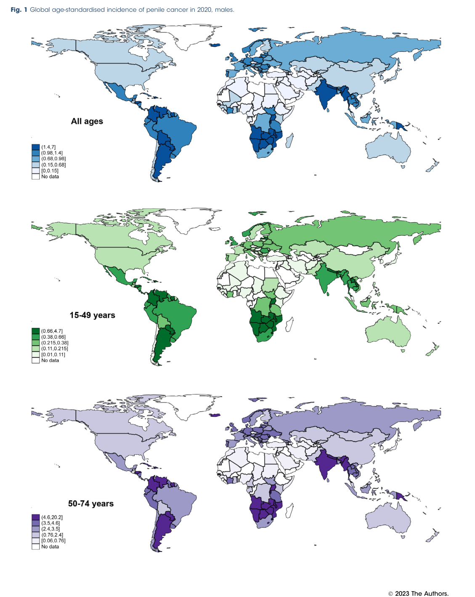

Penile cancer is a primary malignant neoplasm of the penis. Squamous cell carcinoma accounts for approximately 95% of cases, while sarcomas, basal cell carcinomas, and melanoma are rare. Two largely distinct carcinogenic pathways are recognized: an HPV-associated pathway driven by high-risk human papillomavirus E6/E7 oncoproteins (which inactivate p53 and Rb and produce p16INK4a overexpression), and an HPV-independent pathway arising in the background of chronic inflammatory dermatoses such as lichen sclerosus and characterized by somatic TP53, CDKN2A, and HRAS mutations. Penile intraepithelial neoplasia (PeIN) is the recognized precursor lesion. The disease typically arises on the glans, coronal sulcus, or foreskin, presents with diverse clinical lesions, and spreads in a stepwise fashion to inguinal lymph nodes, making nodal assessment central to staging, treatment, and prognosis.
Ask a research question about Penile Cancer. OpenScientist will conduct autonomous deep research using the Disorder Mechanisms Knowledge Base and PubMed literature (typically 10-30 minutes).
Do not include personal health information in your question. Questions and results are cached in your browser's local storage.
name: Penile Cancer
creation_date: "2026-06-08T00:00:00Z"
synonyms:
- Cancer of penis
- Malignant neoplasm of penis
- Penile neoplasm
- Penis cancer
description: >-
Penile cancer is a primary malignant neoplasm of the penis. Squamous cell
carcinoma accounts for approximately 95% of cases, while sarcomas, basal cell
carcinomas, and melanoma are rare. Two largely distinct carcinogenic pathways
are recognized: an HPV-associated pathway driven by high-risk human
papillomavirus E6/E7 oncoproteins (which inactivate p53 and Rb and produce
p16INK4a overexpression), and an HPV-independent pathway arising in the
background of chronic inflammatory dermatoses such as lichen sclerosus and
characterized by somatic TP53, CDKN2A, and HRAS mutations. Penile
intraepithelial neoplasia (PeIN) is the recognized precursor lesion. The
disease typically arises on the glans, coronal sulcus, or foreskin, presents
with diverse clinical lesions, and spreads in a stepwise fashion to inguinal
lymph nodes, making nodal assessment central to staging, treatment, and
prognosis.
categories:
- Urogenital Cancer
- Solid Tumor
- HPV-Related Cancer
disease_term:
preferred_term: penile cancer
term:
id: MONDO:0001325
label: penile cancer
parents:
- male reproductive organ cancer
- penile neoplasm
definitions:
- name: Clinicopathologic definition
definition_type: CASE_DEFINITION
description: >-
Penile cancer is a primary malignant neoplasm of the penis, most commonly
squamous cell carcinoma, diagnosed by clinical examination of the primary
lesion and regional lymph nodes followed by tissue biopsy for histologic
classification.
scope: Adult genitourinary oncology
evidence:
- reference: PMID:38841163
reference_title: "A comprehensive review of current knowledge on penile squamous cell carcinoma."
supports: SUPPORT
evidence_source: HUMAN_CLINICAL
snippet: >-
While the penis can be affected by sarcomas, basal cell carcinomas or
even melanoma, Penile Squamous Cell Carcinoma (PSCC) represents
approximately 95% of all penile neoplasms.
explanation: >-
This review establishes squamous cell carcinoma as the dominant histology
of penile cancer while noting rarer histologies, supporting the scope of
the root entity.
- reference: PMID:38841163
reference_title: "A comprehensive review of current knowledge on penile squamous cell carcinoma."
supports: SUPPORT
evidence_source: HUMAN_CLINICAL
snippet: >-
Diagnosis of PSCC is done through clinical examination, including lymph
node palpation, followed by a biopsy, which is essential for the
classification.
explanation: >-
This supports the biopsy-based clinicopathologic definition and the nodal
examination component.
has_subtypes:
- name: HPV-Associated
display_name: HPV-associated penile squamous cell carcinoma
description: >-
Carcinogenic pathway driven by high-risk human papillomavirus (chiefly
HPV-16) E6/E7 oncoproteins, which inactivate p53 and Rb and produce
characteristic p16INK4a overexpression. Encompasses warty and basaloid
histologic variants and arises from undifferentiated PeIN. Tumors carry few
somatic driver mutations because viral oncoproteins substitute for them.
evidence:
- reference: PMID:37353203
reference_title: "Different Mutational Landscapes in Human Papillomavirus-Induced and Human Papillomavirus-Independent Invasive Penile Squamous Cell Cancers."
supports: SUPPORT
evidence_source: HUMAN_CLINICAL
snippet: >-
oncogenic action of E6 and E7 substitute for mutations in HPV-induced SCC.
explanation: >-
This directly supports the HPV-associated pathway in which viral E6/E7
oncoproteins drive carcinogenesis in place of somatic driver mutations.
- reference: PMID:39758591
reference_title: "Transcriptionally Active Human Papillomavirus in Male Genital Lichen Sclerosus, Penile Intraepithelial Neoplasia, and Penile Squamous Cell Carcinoma."
supports: SUPPORT
evidence_source: HUMAN_CLINICAL
snippet: >-
undifferentiated PeIN and warty/basaloid PeSCC are thought to be HPV
related
explanation: >-
This supports the HPV-associated subtype encompassing warty/basaloid
histology arising from undifferentiated PeIN.
- name: HPV-Independent
display_name: HPV-independent penile squamous cell carcinoma
description: >-
Carcinogenic pathway not driven by HPV, arising in the background of chronic
inflammatory dermatoses such as lichen sclerosus. Encompasses usual
(keratinizing) and verrucous histologic variants and arises from
differentiated PeIN. Tumors are characterized by somatic mutations in tumor
suppressor genes including TP53 and CDKN2A.
evidence:
- reference: PMID:37353203
reference_title: "Different Mutational Landscapes in Human Papillomavirus-Induced and Human Papillomavirus-Independent Invasive Penile Squamous Cell Cancers."
supports: SUPPORT
evidence_source: HUMAN_CLINICAL
snippet: >-
genetic mutations in tumor suppressor genes drive HPV-independent penile
carcinogenesis
explanation: >-
This supports the HPV-independent pathway being driven by tumor suppressor
gene mutations rather than viral oncoproteins.
- reference: PMID:39758591
reference_title: "Transcriptionally Active Human Papillomavirus in Male Genital Lichen Sclerosus, Penile Intraepithelial Neoplasia, and Penile Squamous Cell Carcinoma."
supports: SUPPORT
evidence_source: HUMAN_CLINICAL
snippet: >-
differentiated PeIN and usual PeSCC are considered HPV independent
explanation: >-
This supports the HPV-independent subtype encompassing usual-type
histology arising from differentiated PeIN.
infectious_agent:
- name: High-Risk Human Papillomavirus
description: >-
High-risk HPV infection, predominantly HPV-16, contributes to a substantial
subset of penile cancers and defines the HPV-associated carcinogenic
pathway.
infectious_agent_term:
preferred_term: Human papillomavirus 16
term:
id: NCBITaxon:333760
label: Human papillomavirus 16
evidence:
- reference: PMID:39339000
reference_title: "HPV and Penile Cancer: Epidemiology, Risk Factors, and Clinical Insights."
supports: SUPPORT
evidence_source: HUMAN_CLINICAL
snippet: >-
Approximately 40% of penile tumors are associated with human
papillomavirus (HPV) infection.
explanation: >-
This review directly supports high-risk HPV as a common infectious
contributor to penile cancer.
environmental:
- name: Chronic Inflammatory Dermatosis (Lichen Sclerosus)
description: >-
Male genital lichen sclerosus and other chronic inflammatory dermatoses
provide the tissue background from which HPV-independent penile squamous
cell carcinoma arises.
evidence:
- reference: PMID:37353203
reference_title: "Different Mutational Landscapes in Human Papillomavirus-Induced and Human Papillomavirus-Independent Invasive Penile Squamous Cell Cancers."
supports: SUPPORT
evidence_source: HUMAN_CLINICAL
snippet: >-
independent of HPV in the background of chronic dermatoses
explanation: >-
This supports chronic dermatoses (including lichen sclerosus) as the
inflammatory background for HPV-independent penile carcinogenesis.
- name: Lack of Neonatal Circumcision and Poor Genital Hygiene
description: >-
Absence of neonatal circumcision and poor genital hygiene are established
risk contexts that can coexist with chronic local inflammation, phimosis,
and HPV exposure.
evidence:
- reference: PMID:38841163
reference_title: "A comprehensive review of current knowledge on penile squamous cell carcinoma."
supports: SUPPORT
evidence_source: HUMAN_CLINICAL
snippet: >-
The list of associated risk factors is long and includes among others,
lack of neonatal circumcision, poor genital hygiene, socioeconomic status,
history of human papillomavirus (HPV) infection and penile
intraepithelial neoplasia (PeIN).
explanation: >-
This exact abstract sentence lists lack of neonatal circumcision and poor
genital hygiene among penile cancer risk factors.
- name: Penile Intraepithelial Neoplasia (Precursor Lesion)
description: >-
Penile intraepithelial neoplasia (PeIN) is the recognized precursor lesion
for invasive penile squamous cell carcinoma and forms part of the
classification system. Undifferentiated PeIN is HPV-related while
differentiated PeIN is HPV-independent.
evidence:
- reference: PMID:38841163
reference_title: "A comprehensive review of current knowledge on penile squamous cell carcinoma."
supports: SUPPORT
evidence_source: HUMAN_CLINICAL
snippet: >-
HPV and PeIN are indisputable risk factors, and both also form part of the
classification system for PSCC.
explanation: >-
This directly supports PeIN as an established precursor/risk lesion and
classification component for penile cancer.
pathophysiology:
- name: HPV E6/E7 Oncoprotein-Driven Transformation
conforms_to: "viral_oncogenesis#Host Tumor Suppressor Inactivation and Signaling Hijack"
description: >-
In the HPV-associated pathway, persistent high-risk HPV infection of penile
squamous epithelium expresses the E6 and E7 oncoproteins. E6 targets p53 for
ubiquitin-mediated degradation and E7 inactivates the Rb tumor suppressor,
abrogating cell-cycle checkpoints and producing compensatory p16INK4a
overexpression. These viral oncoproteins substitute for the somatic driver
mutations seen in HPV-independent tumors.
cell_types:
- preferred_term: penile squamous epithelial cell
term:
id: CL:0000076
label: squamous epithelial cell
locations:
- preferred_term: penis epithelium
term:
id: UBERON:0004803
label: penis epithelium
biological_processes:
- preferred_term: ubiquitin-dependent degradation of p53
modifier: INCREASED
term:
id: GO:0006511
label: ubiquitin-dependent protein catabolic process
- preferred_term: cell cycle checkpoint signaling
modifier: DECREASED
term:
id: GO:0000075
label: cell cycle checkpoint signaling
evidence:
- reference: PMID:37353203
reference_title: "Different Mutational Landscapes in Human Papillomavirus-Induced and Human Papillomavirus-Independent Invasive Penile Squamous Cell Cancers."
supports: SUPPORT
evidence_source: HUMAN_CLINICAL
snippet: >-
oncogenic action of E6 and E7 substitute for mutations in HPV-induced SCC.
explanation: >-
This supports E6/E7 oncoprotein action as the transforming mechanism in
HPV-induced penile carcinogenesis.
- reference: PMID:39758591
reference_title: "Transcriptionally Active Human Papillomavirus in Male Genital Lichen Sclerosus, Penile Intraepithelial Neoplasia, and Penile Squamous Cell Carcinoma."
supports: SUPPORT
evidence_source: HUMAN_CLINICAL
snippet: >-
Strong p16 positivity was a reliable surrogate marker for the detection of
transcriptionally active high-risk HPV.
explanation: >-
This supports p16 overexpression as a surrogate for transcriptionally
active high-risk HPV, consistent with E7-mediated Rb inactivation.
downstream:
- target: Invasive Squamous Cell Proliferation and Nodal Spread
description: >-
HPV-driven checkpoint loss converges on malignant squamous proliferation
and local invasion.
- target: Immune-Checkpoint Biomarker Enrichment
description: >-
HPV status stratifies tumor mutational burden and immune-checkpoint
biomarker patterns.
- name: HPV-Independent Somatic Tumor Suppressor Loss
description: >-
In the HPV-independent pathway, chronic inflammation (e.g., lichen
sclerosus) is the background for accumulation of somatic mutations in tumor
suppressor and cell-cycle genes. TP53, CDKN2A, and HRAS mutations occur
almost exclusively in HPV-independent tumors, with frequent co-occurrence of
TP53 and CDKN2A, driving checkpoint loss and proliferation.
genes:
- preferred_term: TP53
term:
id: hgnc:11998
label: TP53
- preferred_term: CDKN2A
term:
id: hgnc:1787
label: CDKN2A
- preferred_term: HRAS
term:
id: hgnc:5173
label: HRAS
biological_processes:
- preferred_term: cell cycle checkpoint signaling
modifier: DECREASED
term:
id: GO:0000075
label: cell cycle checkpoint signaling
- preferred_term: positive regulation of cell population proliferation
modifier: INCREASED
term:
id: GO:0008284
label: positive regulation of cell population proliferation
evidence:
- reference: PMID:37353203
reference_title: "Different Mutational Landscapes in Human Papillomavirus-Induced and Human Papillomavirus-Independent Invasive Penile Squamous Cell Cancers."
supports: SUPPORT
evidence_source: HUMAN_CLINICAL
snippet: >-
mutations in TP53 (44/77; 57%), CDKN2A (35/77; 45%), and HRAS (13/77; 17%)
genes occurred with one exception of a HIV positive patient exclusively in
HPV-independent SCC
explanation: >-
This directly supports TP53, CDKN2A, and HRAS mutations as near-exclusive
drivers of the HPV-independent pathway.
- reference: PMID:37353203
reference_title: "Different Mutational Landscapes in Human Papillomavirus-Induced and Human Papillomavirus-Independent Invasive Penile Squamous Cell Cancers."
supports: SUPPORT
evidence_source: HUMAN_CLINICAL
snippet: >-
genetic mutations in tumor suppressor genes drive HPV-independent penile
carcinogenesis
explanation: >-
This supports tumor suppressor gene loss as the central mechanism of the
HPV-independent pathway.
downstream:
- target: Invasive Squamous Cell Proliferation and Nodal Spread
description: >-
Tumor suppressor loss supports malignant proliferation, invasion, and
nodal dissemination.
- name: Immune-Checkpoint Biomarker Enrichment
conforms_to: "immune_checkpoint_blockade#Adaptive Immune Resistance"
description: >-
A substantial subset of penile cancers shows PD-L1 positivity, and high
tumor mutational burden is enriched in HPV-positive tumors. These
immune-checkpoint biomarkers provide a rationale for immune-checkpoint
inhibitor therapy and patient stratification.
biological_processes:
- preferred_term: negative regulation of T cell mediated immunity
modifier: INCREASED
term:
id: GO:0002710
label: negative regulation of T cell mediated immunity
evidence:
- reference: PMID:37565840
reference_title: "Comprehensive genomic profiling of penile squamous cell carcinoma and the impact of human papillomavirus status on immune-checkpoint inhibitor-related biomarkers."
supports: SUPPORT
evidence_source: HUMAN_CLINICAL
snippet: >-
Overall, 51% of tumors were PD-L1+, 10.7% had high TMB, and 1.1% had
mismatch repair-deficient (dMMR)/MSI-high status.
explanation: >-
This supports PD-L1 positivity and high TMB as immune-checkpoint-related
biomarkers in penile cancer.
- reference: PMID:37565840
reference_title: "Comprehensive genomic profiling of penile squamous cell carcinoma and the impact of human papillomavirus status on immune-checkpoint inhibitor-related biomarkers."
supports: SUPPORT
evidence_source: HUMAN_CLINICAL
snippet: >-
Increased tumor mutational burden is associated with HPV-positive tumors,
and could serve as a biomarker for predicting therapeutic response to
ICI-based therapies.
explanation: >-
This supports the HPV-associated immune biomarker rationale for
immune-checkpoint inhibitor therapy selection.
- name: Invasive Squamous Cell Proliferation and Nodal Spread
description: >-
Both carcinogenic pathways converge on malignant squamous cell proliferation
with local invasion of the glans, coronal sulcus, or foreskin, followed by
stepwise lymphatic dissemination to inguinal lymph nodes. Occult inguinal
nodal metastasis in clinically node-negative disease is common, making nodal
staging central to prognosis.
cell_types:
- preferred_term: penile squamous epithelial cell
term:
id: CL:0000076
label: squamous epithelial cell
locations:
- preferred_term: glans penis
term:
id: UBERON:0001299
label: glans penis
biological_processes:
- preferred_term: cell population proliferation
modifier: INCREASED
term:
id: GO:0008283
label: cell population proliferation
evidence:
- reference: PMID:38841163
reference_title: "A comprehensive review of current knowledge on penile squamous cell carcinoma."
supports: SUPPORT
evidence_source: HUMAN_CLINICAL
snippet: >-
Lymph node involvement is a common finding at first presentation and
investigation of spread to deep nodes is important and can be done with
the aid of PET-CT.
explanation: >-
This supports inguinal/deep nodal spread as a clinically important
manifestation of invasive penile cancer.
- reference: PMID:39272796
reference_title: "Minimally Invasive Management of Inguinal Lymph Nodes in Penile Cancer: Recent Progress and Remaining Challenges."
supports: SUPPORT
evidence_source: HUMAN_CLINICAL
snippet: >-
The diagnosis of occult inguinal lymph node metastasis in clinically
node-negative invasive penile squamous cell carcinoma (PSCC) has remained
a challenge, with substantial perioperative complications.
explanation: >-
This supports occult inguinal lymph-node metastasis as a key feature of
invasive penile cancer.
histopathology:
- name: Squamous Cell Carcinoma Histology
description: >-
Squamous cell carcinoma is the dominant penile cancer histology (~95%),
classified by HPV-associated (warty, basaloid) and HPV-independent (usual,
verrucous) pathways and variants. Rare histologies include sarcoma, basal
cell carcinoma, and melanoma.
evidence:
- reference: PMID:38841163
reference_title: "A comprehensive review of current knowledge on penile squamous cell carcinoma."
supports: SUPPORT
evidence_source: HUMAN_CLINICAL
snippet: >-
While the penis can be affected by sarcomas, basal cell carcinomas or
even melanoma, Penile Squamous Cell Carcinoma (PSCC) represents
approximately 95% of all penile neoplasms.
explanation: >-
This supports squamous cell carcinoma as the dominant histology and notes
the rarer histologic types of penile cancer.
phenotypes:
- category: Clinical
name: Primary Penile Lesion
description: >-
The primary clinical abnormality is a penile neoplasm involving external
male genital tissues, typically on the glans, coronal sulcus, or foreskin,
requiring examination and biopsy for classification.
phenotype_term:
preferred_term: primary penile lesion
term:
id: HP:0000032
label: Abnormal male external genitalia morphology
evidence:
- reference: PMID:38841163
reference_title: "A comprehensive review of current knowledge on penile squamous cell carcinoma."
supports: SUPPORT
evidence_source: HUMAN_CLINICAL
snippet: >-
Penile Squamous Cell Carcinoma (PSCC) represents approximately 95% of all
penile neoplasms.
explanation: >-
This supports penile cancer as a primary penile neoplastic abnormality.
- category: Clinical
name: Variable Clinical Presentation
description: >-
Penile cancer can present in diverse clinical forms, which can delay
diagnosis and requires direct examination and biopsy of suspicious penile
lesions.
phenotype_term:
preferred_term: variable penile clinical presentation
term:
id: HP:0000078
label: Abnormality of the genital system
evidence:
- reference: PMID:39339000
reference_title: "HPV and Penile Cancer: Epidemiology, Risk Factors, and Clinical Insights."
supports: SUPPORT
evidence_source: HUMAN_CLINICAL
snippet: >-
Diagnosing PC remains challenging due to its rarity and variety of
clinical presentations.
explanation: >-
This supports variable clinical presentation as a practical phenotype of
penile cancer.
- category: Clinical
name: Inguinal Lymphadenopathy
description: >-
Regional nodal spread may manifest as clinically palpable inguinal
lymphadenopathy and can also be occult in clinically node-negative invasive
disease.
phenotype_term:
preferred_term: inguinal lymphadenopathy
term:
id: HP:0034751
label: Inguinal lymphadenopathy
evidence:
- reference: PMID:39272796
reference_title: "Minimally Invasive Management of Inguinal Lymph Nodes in Penile Cancer: Recent Progress and Remaining Challenges."
supports: SUPPORT
evidence_source: HUMAN_CLINICAL
snippet: >-
Although DSLNB, if available, has been endorsed as the preferred method
for nodal staging in patients with invasive PSCC and no palpable inguinal
lymphadenopathy in the recent penile cancer guidelines, its utilization
has been quite limited so far.
explanation: >-
This directly references palpable inguinal lymphadenopathy status in
penile cancer nodal staging.
genetic:
- name: TP53
association: Somatic Driver Mutation
gene_term:
preferred_term: TP53
term:
id: hgnc:11998
label: TP53
notes: >-
TP53 is the most frequent somatic alteration in penile squamous cell
carcinoma overall and occurs near-exclusively in the HPV-independent
pathway.
evidence:
- reference: PMID:37565840
reference_title: "Comprehensive genomic profiling of penile squamous cell carcinoma and the impact of human papillomavirus status on immune-checkpoint inhibitor-related biomarkers."
supports: SUPPORT
evidence_source: HUMAN_CLINICAL
snippet: >-
revealed TP53 (46%), CDKN2A (26%), and PIK3CA (25%) to be the most
common mutations.
explanation: >-
This NGS cohort identifies TP53 as the most common recurrent somatic
alteration in penile squamous cell carcinoma.
- name: CDKN2A
association: Somatic Driver Mutation
gene_term:
preferred_term: CDKN2A
term:
id: hgnc:1787
label: CDKN2A
notes: >-
CDKN2A mutation disrupts cell-cycle control and is enriched in the
HPV-negative subset, frequently co-occurring with TP53.
evidence:
- reference: PMID:37565840
reference_title: "Comprehensive genomic profiling of penile squamous cell carcinoma and the impact of human papillomavirus status on immune-checkpoint inhibitor-related biomarkers."
supports: SUPPORT
evidence_source: HUMAN_CLINICAL
snippet: >-
CDKN2A mutations (0% vs. 37.5%) were exclusive to HPV16/18- tumors.
explanation: >-
This supports CDKN2A mutation as a recurrent HPV-independent penile cancer
molecular feature.
- name: HRAS
association: Somatic Driver Mutation
gene_term:
preferred_term: HRAS
term:
id: hgnc:5173
label: HRAS
notes: >-
HRAS mutation occurs near-exclusively in HPV-independent penile squamous
cell carcinoma, contributing to RAS-pathway activation.
evidence:
- reference: PMID:37353203
reference_title: "Different Mutational Landscapes in Human Papillomavirus-Induced and Human Papillomavirus-Independent Invasive Penile Squamous Cell Cancers."
supports: SUPPORT
evidence_source: HUMAN_CLINICAL
snippet: >-
mutations in TP53 (44/77; 57%), CDKN2A (35/77; 45%), and HRAS (13/77; 17%)
genes occurred with one exception of a HIV positive patient exclusively in
HPV-independent SCC
explanation: >-
This supports HRAS as a recurrent somatic driver in the HPV-independent
penile cancer pathway.
treatments:
- name: Organ-Sparing Surgery
description: >-
Penile-preserving local excision, glansectomy, or partial penectomy provides
primary local control of resectable disease while preserving as much penile
function and quality of life as oncologically feasible.
treatment_term:
preferred_term: surgical procedure
term:
id: MAXO:0000004
label: surgical procedure
evidence:
- reference: PMID:38841163
reference_title: "A comprehensive review of current knowledge on penile squamous cell carcinoma."
supports: SUPPORT
evidence_source: HUMAN_CLINICAL
snippet: >-
Surgical removal of the tumor is considered the most effective however
can lead to severe decrease of quality of life.
explanation: >-
This supports surgery as the core local treatment, motivating
organ-sparing approaches to mitigate the quality-of-life burden.
- name: Inguinal Lymphadenectomy
description: >-
Inguinal lymph node dissection (ILND), increasingly performed with minimally
invasive techniques, is used for nodal staging and management of nodal
metastasis. Dynamic sentinel lymph node biopsy is the preferred staging
method in clinically node-negative invasive disease.
treatment_term:
preferred_term: lymphadenectomy
term:
id: MAXO:0001063
label: lymphadenectomy
evidence:
- reference: PMID:39272796
reference_title: "Minimally Invasive Management of Inguinal Lymph Nodes in Penile Cancer: Recent Progress and Remaining Challenges."
supports: SUPPORT
evidence_source: HUMAN_CLINICAL
snippet: >-
For management of nodal metastasis in patients with clinically palpable
inguinal lymph nodes, minimally invasive ILND has shown promising results
as well.
explanation: >-
This supports inguinal lymphadenectomy as a treatment for nodal metastasis
in penile cancer.
- name: Platinum-Based Chemotherapy
description: >-
Platinum-based systemic chemotherapy is used for fixed or bulky nodal
disease and distant metastatic penile cancer, and as part of chemoradiation
and chemo-immunotherapy regimens.
treatment_term:
preferred_term: chemotherapy
term:
id: MAXO:0000647
label: chemotherapy
therapeutic_agent:
- preferred_term: platinum compound
term:
id: NCIT:C1450
label: Platinum Compound
evidence:
- reference: PMID:38841163
reference_title: "A comprehensive review of current knowledge on penile squamous cell carcinoma."
supports: SUPPORT
evidence_source: HUMAN_CLINICAL
snippet: >-
Chemotherapy is used in the case of fixed or bulky lymph nodes, where
surgery is not indicated, and for distant metastasis.
explanation: >-
This supports chemotherapy in advanced nodal or metastatic penile cancer.
- name: Radiation Therapy
description: >-
Radiation therapy is used in selected penile cancer contexts, including
organ-preservation strategies and combined chemoradiation, with particular
relevance in HPV-positive disease.
treatment_term:
preferred_term: radiation therapy
term:
id: MAXO:0000014
label: radiation therapy
evidence:
- reference: PMID:38841163
reference_title: "A comprehensive review of current knowledge on penile squamous cell carcinoma."
supports: SUPPORT
evidence_source: HUMAN_CLINICAL
snippet: >-
Radiation therapy is particularly effective in the case of HPV-positive
PSCC.
explanation: >-
This supports radiation therapy as a modality with relevance in
HPV-positive penile cancer.
- name: EGFR-Targeted Therapy
description: >-
EGFR-targeted agents such as cetuximab are used in advanced or refractory
penile squamous cell carcinoma; a subgroup of advanced tumors may be
candidates for targeted therapy and clinical trials.
treatment_term:
preferred_term: Pharmacotherapy
term:
id: NCIT:C15986
label: Pharmacotherapy
therapeutic_agent:
- preferred_term: cetuximab
term:
id: NCIT:C1723
label: Cetuximab
evidence:
- reference: PMID:37353203
reference_title: "Different Mutational Landscapes in Human Papillomavirus-Induced and Human Papillomavirus-Independent Invasive Penile Squamous Cell Cancers."
supports: PARTIAL
evidence_source: HUMAN_CLINICAL
snippet: >-
A subgroup of patients with advanced SCC may be candidates for targeted
therapy and clinical trials, although the majority of advanced penile SCC
remain a therapeutic challenge.
explanation: >-
This supports targeted therapy (including EGFR-directed agents) as an
option for a subgroup of advanced penile cancer, while noting that most
advanced disease remains a therapeutic challenge.
- name: Immune Checkpoint Inhibitor Therapy
description: >-
Immune-checkpoint inhibitors such as pembrolizumab have shown efficacy in
HPV-associated penile cancer and are used, often in combination, in advanced
disease, motivated by PD-L1 and TMB biomarker findings.
treatment_term:
preferred_term: Pharmacotherapy
term:
id: NCIT:C15986
label: Pharmacotherapy
therapeutic_agent:
- preferred_term: pembrolizumab
term:
id: NCIT:C106432
label: Pembrolizumab
target_mechanisms:
- target: Immune-Checkpoint Biomarker Enrichment
treatment_effect: MODULATES
description: >-
Immune-checkpoint inhibitors are intended to restore anti-tumor immune
activity in biomarker-selected or advanced penile cancer.
evidence:
- reference: PMID:39339000
reference_title: "HPV and Penile Cancer: Epidemiology, Risk Factors, and Clinical Insights."
supports: SUPPORT
evidence_source: HUMAN_CLINICAL
snippet: >-
recent advancements in immune checkpoint inhibitors (ICIs) have shown some
efficacy in treating HPV-associated PC.
explanation: >-
This supports immune-checkpoint inhibitors as showing efficacy in
HPV-associated penile cancer.
- name: Prophylactic HPV Vaccination
description: >-
Prophylactic HPV vaccination is a primary-prevention strategy that blocks
high-risk HPV transmission and reduces the incidence of HPV-related cancers,
including penile cancer, by preventing the persistent infections that drive
the HPV-associated carcinogenic pathway.
treatment_term:
preferred_term: vaccination
term:
id: MAXO:0001017
label: vaccination
evidence:
- reference: PMID:39591193
reference_title: "Human Papillomavirus-Related Cancer Vaccine Strategies."
supports: SUPPORT
evidence_source: HUMAN_CLINICAL
snippet: >-
Human papillomavirus (HPV) persistent infection is a major pathogenic
factor for HPV-related cancers, such as cervical cancer (CC), vaginal
cancer, vulvar cancer, anal cancer, penile cancer, and head and neck
cancer (HNC).
explanation: >-
This identifies penile cancer as an HPV-related cancer driven by
persistent HPV infection, the target of prophylactic vaccination.
- reference: PMID:39591193
reference_title: "Human Papillomavirus-Related Cancer Vaccine Strategies."
supports: SUPPORT
evidence_source: HUMAN_CLINICAL
snippet: >-
Vaccination against HPV can effectively block the transmission of the
virus and prevent HPV-related cancers.
explanation: >-
This supports prophylactic HPV vaccination as an effective prevention
strategy for HPV-related cancers including penile cancer.
Penile cancer is a malignant tumor arising in penile tissues, most commonly penile squamous cell carcinoma (PSCC). Contemporary guidance emphasizes classifying PSCC into HPV-associated and HPV-independent subtypes, reflecting distinct etiologic pathways. (taghizadeh2025immunotherapyinthe pages 1-2, brouwer2024penilecancereauasco pages 1-2)
Key definition statements (abstract-derived): - A 2024 HPV-focused review states: “Penile cancer (PC) is a rare malignancy predominantly of squamous cell origin.” (Pathogens; Sep 2024; https://doi.org/10.3390/pathogens13090809) (mannam2024hpvandpenile pages 1-2) - EAU-ASCO 2023 update summary notes PSCC is divided into HPV-associated and HPV-independent (e.g., lichen sclerosus) pathways and that HPV status determination is required at diagnosis. (JCO Oncology Practice; Jan 2024; https://doi.org/10.1200/op.23.00585) (brouwer2024penilecancereauasco pages 1-2)
Evidence in the retrieved sources directly supports guideline-level and MeSH/ICD usage but did not return explicit ontology IDs. - ICD-10: C60 (Malignant neoplasm of penis) (not explicitly printed in retrieved texts; standard coding) - MeSH: Penile Neoplasms (not explicitly printed in retrieved texts; standard MeSH heading) - MONDO: Not located in retrieved sources during this run (see caveat above). (brouwer2024penilecancereauasco pages 1-2)
This report is derived from aggregated disease-level resources: peer-reviewed reviews, guideline summaries, registry/population-based studies, and retrospective cohorts. It is not EHR-derived. (brouwer2024penilecancereauasco pages 1-2, huang2024incidenceriskfactors pages 1-2)
A major causal pathway is persistent infection with high-risk HPV (most commonly HPV16). A key mechanistic chain is: HPV infection → integration/oncogene expression (E6/E7) → functional inhibition of TP53 and RB1 tumor suppressor pathways → dysregulated cell cycle and genomic instability; p16INK4a overexpression is used as a surrogate marker reflecting RB pathway disruption. (mannam2024hpvandpenile pages 5-6, brouwer2024penilecancereauasco pages 1-2)
Abstract quote: the Pathogens 2024 review states: “Approximately 40% of penile tumors are associated with human papillomavirus (HPV) infection.” (Sep 2024; https://doi.org/10.3390/pathogens13090809) (mannam2024hpvandpenile pages 1-2)
HPV-independent disease is commonly linked to chronic inflammatory/scarring dermatoses (e.g., lichen sclerosus) and other non-viral exposures; it corresponds to distinct PeIN subtype biology (differentiated PeIN). (uppal2026penilecancer—apreventable pages 1-2, brouwer2024penilecancereauasco pages 1-2)
Direct gene–environment interaction studies specific to penile cancer were not retrieved here. However, the dual-pathway model implies interaction of host genomic susceptibility and inflammatory microenvironment (HPV-independent) versus viral oncogene-driven pathway (HPV-associated). (brouwer2024penilecancereauasco pages 1-2)
A Swedish guideline summary highlights presentation patterns that should trigger suspicion: - Penile ulcer or lump (HPO suggestion: genital ulceration, penile mass) (gerdtsson2025theswedishnational pages 2-4) - Reddish rash refractory to topical corticosteroids (HPO: erythema, rash) (gerdtsson2025theswedishnational pages 2-4) - Bleeding or foul-smelling discharge under a phimotic prepuce (HPO: genital bleeding, malodorous discharge) (gerdtsson2025theswedishnational pages 2-4) - Penile pain (HPO: penile pain) (gerdtsson2025theswedishnational pages 2-4)
Penile cancer has early lymphatic dissemination; in intermediate/high-risk primary tumors with cN0 groins, micro-metastatic risk is described as 6–30%. (gebruers2023accuracyofdynamic pages 1-2)
The EAU-ASCO summary and follow-up review emphasize significant QoL impacts, including: - Psychological distress related to mutilation and perceived loss of masculinity - Sexual and urinary dysfunction - Lymphedema associated with nodal procedures - Need for multidisciplinary supportive/rehabilitative interventions (sexual therapy, counseling). (brouwer2024penilecancereauasco pages 1-2, lasorsa2024followupcare pages 4-5)
Penile cancer is not typically a monogenic inherited disorder; rather it is driven by somatic alterations and, in a subset, viral oncogene effects. No germline causal gene set was established in the retrieved evidence. (brouwer2024penilecancereauasco pages 1-2, nazha2023comprehensivegenomicprofiling pages 1-2)
In 108 pSCC tumors: - TP53 altered: 46% - CDKN2A altered: 26% - PIK3CA altered: 25% Immunotherapy biomarkers in the overall cohort: - PD-L1 positive: 51% - TMB-high (≥10 mut/Mb): 10.7% - dMMR/MSI-high: 1.1% (https://doi.org/10.1002/cncr.34982; Aug 2023) (nazha2023comprehensivegenomicprofiling pages 1-2)
HPV-stratified differences (WES HPV status subset; n=29): - TP53 alterations: 62.5% (HPV−) vs 7.7% (HPV+) (p=0.006) - TERT alterations: 76.9% (HPV−) vs 25.0% (HPV+) (p=0.032) - CDKN2A mutations: 37.5% only in HPV− (0% in HPV+) - TMB-high: 0% (HPV−) vs 30.8% (HPV+) (p=0.035) The authors explicitly caution: “Our finding that TMB-high is exclusive to HPV16/18þ tumors requires confirmation in larger data sets.” (nazha2023comprehensivegenomicprofiling pages 1-2, nazha2023comprehensivegenomicprofiling pages 5-6)
In 18 NGS-profiled metastatic tumors: - TP53: 66.7% - TERT: 50% - CDKN2A: 50% - PIK3CA: 33.3% - NOTCH1: 27.8% (reported only in HPV-negative tumors) Biomarkers: - PD-L1 CPS≥1%: 63.6% - Median TMB: 3.85 mut/Mb (range 0–8.83); no TMB-high cases (https://doi.org/10.1093/oncolo/oyae220; Sep 2025) (monteiro2025molecularcharacterizationof pages 4-6)
Epigenetic biomarker claims (e.g., methylation markers) were referenced in the HPV/p16 systematic review’s citation list but were not extractable as primary quantified findings from the retrieved pages in this run. (parza2023theprognosticrole pages 11-12)
HPV infection → E6/E7 expression → p53/Rb inhibition → cell cycle dysregulation and uncontrolled proliferation; p16 overexpression as surrogate; immune evasion and altered cytokine signaling may shape response to therapy. (mannam2024hpvandpenile pages 5-6, mannam2024hpvandpenile pages 13-14)
Suggested GO biological process terms (examples): - cell cycle checkpoint signaling; regulation of epithelial cell proliferation; response to virus; antigen processing and presentation; interferon-gamma-mediated signaling pathway; negative regulation of immune response. (mannam2024hpvandpenile pages 13-14, jaimecasas2025evaluatingtheevolving pages 9-11)
Suggested CL cell types: - keratinocyte (tumor cell-of-origin in SCC), CD8-positive alpha-beta T cell, regulatory T cell, natural killer cell, tumor-associated macrophage, myeloid-derived suppressor cell. (jaimecasas2025evaluatingtheevolving pages 9-11)
Penile cancer pathophysiology can be organized into two principal routes: 1) HPV-associated route: viral oncogene-driven cell-cycle disruption and immune microenvironment modulation; may exhibit differing TIL composition and exhaustion signatures as stage advances. (mannam2024hpvandpenile pages 13-14, mannam2024hpvandpenile pages 5-6) 2) HPV-independent route: chronic inflammation/scarring (e.g., lichen sclerosus), with higher rates of TP53/TERT pathway alterations and distinct precursor lesions (differentiated PeIN). (brouwer2024penilecancereauasco pages 1-2, nazha2023comprehensivegenomicprofiling pages 5-6)
Key pathways repeatedly implicated in profiling include TP53, RTK–RAS, PI3K/mTOR, and cell-cycle pathways. (nazha2023comprehensivegenomicprofiling pages 4-5)
A figure from the paper illustrates global ASR variation across age strata. (huang2024incidenceriskfactors media 3423e6f1)
Rising incidence among younger males (15–49) was emphasized, with examples of large AAPC in several jurisdictions (e.g., Martinique AAPC ~29.84; Turkey ~27.14; Japan ~12.84). (huang2024incidenceriskfactors pages 7-7)
Penile cancer is primarily multifactorial/somatic; no Mendelian inheritance pattern is supported by the retrieved evidence. (nazha2023comprehensivegenomicprofiling pages 1-2)
A key real-world implementation is DSNB for cN0 intermediate/high-risk patients.
Performance metrics (Gebruers et al., EJNMMI Research, Jun 2023; https://doi.org/10.1186/s13550-023-01013-1): - Detection rate: 91% per procedure, 96% per groin - Sensitivity 79%, specificity 100%, NPV 97%, PPV 100% - DSNB-related adverse events: 1% (1/75 patients) These are reported in the abstract and results extracts. (gebruers2023accuracyofdynamic pages 1-2, gebruers2023accuracyofdynamic pages 4-6)
Not comprehensively retrievable from the evidence excerpts in this run; however, chronic inflammatory/dermatologic penile lesions (e.g., lichen sclerosus-related changes) can mimic malignancy and warrant low biopsy threshold, especially when refractory. (marques2023clinicalandepidemologic pages 13-18, gerdtsson2025theswedishnational pages 2-4)
A 2024 global analysis summarizes: ~90% 5-year overall survival for localized penile cancer and <10% for metastatic disease. (huang2024incidenceriskfactors pages 1-2)
A 2023 JNCI multicenter retrospective cohort (92 patients) reported: - Median OS 9.8 months (95% CI 7.7–12.8) - Median PFS 3.2 months (95% CI 2.5–4.2) - ORR 13% (11/85 evaluable) - ORR 35% in lymph-node–only metastases subgroup - Treatment-related AEs: 29% any grade; 9.8% grade ≥3 (https://doi.org/10.1093/jnci/djad155; Aug 2023) (zarif2023safetyandefficacy pages 1-2)
ICIs show activity in a subset (see Prognosis section), driving ongoing clinical trials. (zarif2023safetyandefficacy pages 1-2)
Not addressed in the retrieved sources for this run. No evidence-supported cross-species natural penile cancer summary can be provided without additional targeted veterinary literature retrieval. (brouwer2024penilecancereauasco pages 1-2)
Dedicated animal models were not retrieved in this run. A relevant in vitro direction exists via penile cancer cell line development and chemoresistance modeling (paper retrieved but not extracted here); however, providing specifics without direct evidence excerpts would be speculative. This section should be populated after targeted model-system literature retrieval (e.g., Cellosaurus-listed penile SCC lines; xenograft/organoid reports). (brouwer2024penilecancereauasco pages 1-2)
The table below consolidates knowledge-base-ready facts with citations, ontology suggestions, and key numeric findings.
| Domain | Key points | Ontology terms | Key sources |
|---|---|---|---|
| Identifiers/Definition | Penile cancer is a rare malignancy; ~95% are penile squamous cell carcinomas (PSCC). Current pathology framework separates HPV-associated and HPV-independent disease; precursor lesions include penile intraepithelial neoplasia (PeIN). MONDO ID was not available from retrieved sources. Aggregated disease-level literature/guidelines, not individual EHR-derived data. (taghizadeh2025immunotherapyinthe pages 1-2, brouwer2024penilecancereauasco pages 1-2) | MONDO: not available from retrieved sources; MeSH: Penile Neoplasms; ICD-10: C60; ICD-11: malignant neoplasm of penis; UBERON: penis; HPO: HP:0030358 Neoplasm of the penis | Mannam 2024; URL: https://doi.org/10.3390/pathogens13090809. Brouwer 2024; URL: https://doi.org/10.1200/op.23.00585 |
| Etiology/Risk | HPV is implicated in ~38.5%–50.8% of penile cancers; high-risk HPV16 predominates. Major risks: phimosis, smoking, poor hygiene, low socioeconomic status; chronic inflammatory dermatoses/lichen sclerosus contribute to HPV-independent disease. Childhood/adolescent circumcision is protective (OR 0.33). (mannam2024hpvandpenile pages 1-2, marques2023clinicalandepidemologic pages 13-18, uppal2026penilecancer—apreventable pages 1-2, mannam2024hpvandpenile pages 2-4, huang2024incidenceriskfactors pages 1-2) | CHEBI: tobacco smoke; NCBITaxon: Human papillomavirus; HPO: HP:0100513 Phimosis; GO: response to virus, epithelial cell proliferation | Mannam 2024; URL: https://doi.org/10.3390/pathogens13090809. Huang 2024; URL: https://doi.org/10.1111/bju.16224 |
| Epidemiology/Trends | Global 2020 burden: 36,068 new cases; ASR 0.80/100,000. Highest regional ASRs: South America 1.5, Caribbean 1.4, Melanesia 1.4, South-Central Asia 1.3, Eastern Africa 1.2; Northern America 0.5. Younger-male incidence is rising in several countries; overall old:young incidence ratio 9.7:1. US estimate cited in 2024 review: ~2,100 new cases and ~500 deaths in 2024. (huang2024incidenceriskfactors pages 2-3, huang2024incidenceriskfactors pages 1-2, huang2024incidenceriskfactors pages 7-7, lasorsa2024followupcare pages 4-5, huang2024incidenceriskfactors media 3423e6f1) | MONDO: not available; MeSH: Penile Neoplasms; ICD-10: C60 | Huang 2024; URL: https://doi.org/10.1111/bju.16224. Lasorsa 2024; URL: https://doi.org/10.2147/RRU.S465546 |
| Phenotypes | Typical presentations raising suspicion: penile ulcer or lump, reddish rash refractory to topical corticosteroids, bleeding or foul-smelling discharge under phimotic prepuce, penile pain. Glans is a common primary site. Untreated PeIN may progress to invasive cancer in ~30%. (gerdtsson2025theswedishnational pages 2-4, gerdtsson2025theswedishnational pages 1-2) | HPO: penile pain, genital ulceration, penile mass, malodorous discharge, erythroplasia; UBERON: glans penis, prepuce | Gerdtsson 2025; URL: https://doi.org/10.2340/sju.v60.44463 |
| Molecular/Genetics | Overall genomic profile (Nazha 2023): TP53 46%, CDKN2A 26%, PIK3CA 25%; TERT promoter ~22%; NOTCH1 ~14%; EGFR amplification 7.8%; pathways: TP53 44.6%, RTK-RAS 36.6%, PI3K/mTOR 31.7%. By HPV status: HPV-negative tumors had higher TP53 alterations (62.5% vs 7.7%) and TERT alterations (76.9% vs 25.0%); CDKN2A mutations only in HPV-negative tumors (37.5% vs 0%); TMB-high only in HPV16/18-positive tumors (30.8% vs 0%). Metastatic cohort (Monteiro 2025): TP53 66.7%, TERT 50%, CDKN2A 50%, PIK3CA 33.3%, NOTCH1 27.8%; PD-L1 CPS≥1 in 63.6%; no TMB-high identified; NOTCH1 only in HPV-negative tumors. (nazha2023comprehensivegenomicprofiling pages 1-2, monteiro2025molecularcharacterizationof pages 4-6, nazha2023comprehensivegenomicprofiling pages 4-5) | HGNC: TP53, CDKN2A, PIK3CA, TERT, NOTCH1, EGFR, FGFR3; GO: cell cycle checkpoint signaling, PI3K signaling, keratinocyte proliferation, viral carcinogenesis; CL: keratinocyte, CD8-positive T cell, macrophage | Nazha 2023; PMID not available in retrieved context; URL: https://doi.org/10.1002/cncr.34982. Monteiro 2025; PMID not available in retrieved context; URL: https://doi.org/10.1093/oncolo/oyae220 |
| Diagnostics/Staging | EAU-ASCO 2023 update recommends determining HPV status at diagnosis; direct HPV testing by PCR/ISH, with p16 IHC as a reliable surrogate. For cN0 intermediate/high-risk tumors, DSNB is recommended when surgical staging is indicated; if unavailable, offer ILND. In a 2023 DSNB series, detection rate was 91% per procedure and 96% per groin; sensitivity 79%, specificity 100%, NPV 97%, PPV 100%; adverse events 1%. (brouwer2024penilecancereauasco pages 1-2, brouwer2024penilecancereauasco pages 3-4, gebruers2023accuracyofdynamic pages 4-6) | MAXO: biopsy of penis, immunohistochemistry, HPV testing, sentinel lymph node biopsy, inguinal lymph node dissection; HPO: inguinal lymphadenopathy; UBERON: inguinal lymph node | Brouwer 2024; URL: https://doi.org/10.1200/op.23.00585. Gebruers 2023; URL: https://doi.org/10.1186/s13550-023-01013-1 |
| Prognosis | Survival is highly stage-dependent: ~90% 5-year OS for localized disease and <10% for metastatic disease. In metastatic ICI-treated patients, median OS 9.8 months and median PFS 3.2 months; ORR 13% overall, 35% in lymph-node-only metastases. NOTCH1 alteration in metastatic PSCC associated with worse OS (5.5 vs 12.8 months) and PFS (5.5 vs 11.7 months). PeIN-positive surgical margins after penile-sparing surgery increased local recurrence risk (HR 1.51, 95% CI 1.07–2.12). (huang2024incidenceriskfactors pages 1-2, monteiro2025molecularcharacterizationof pages 4-6, lasorsa2024followupcare pages 4-5) | HPO: local recurrence, lymph node metastasis, distant metastasis; GO: negative regulation of apoptotic process | Huang 2024; URL: https://doi.org/10.1111/bju.16224. Zarif 2023; URL: https://doi.org/10.1093/jnci/djad155. Lee 2023; URL: https://doi.org/10.1097/JU.0000000000003635 |
| Treatment | Localized disease: penile-sparing surgery/topical therapy for selected Ta/Tis/PeIN; advanced disease: platinum-based chemotherapy, surgery/radiotherapy in multimodal pathways. TIP remains a key neoadjuvant regimen; modern guidelines advise avoiding bleomycin. ICI real-world/global cohort: pembrolizumab, nivolumab±ipilimumab, cemiplimab used; trAEs 29%, grade ≥3 trAEs 9.8%. (brouwer2024penilecancereauasco pages 1-2, lasorsa2024followupcare pages 4-5, taghizadeh2025immunotherapyinthe pages 2-4) | MAXO: partial penectomy, total penectomy, glansectomy, topical imiquimod therapy, topical fluorouracil therapy, platinum-based chemotherapy, radiotherapy, immune checkpoint inhibitor therapy | Brouwer 2024; URL: https://doi.org/10.1200/op.23.00585. Lasorsa 2024; URL: https://doi.org/10.2147/RRU.S465546. Zarif 2023; URL: https://doi.org/10.1093/jnci/djad155 |
| Prevention | Preventive priorities: HPV vaccination, circumcision, smoking cessation, genital hygiene, early diagnosis/treatment of PeIN and lichen sclerosus. WHO-linked review notes prophylactic HPV vaccination is effective and expanding globally; by end of 2023, 143 WHO member states had introduced HPV vaccine programs. (uppal2026penilecancer—apreventable pages 1-2, mannam2024hpvandpenile pages 2-4) | MAXO: HPV vaccination, smoking cessation intervention, circumcision, health education; CHEBI: tobacco; NCBITaxon: HPV | Mannam 2024; URL: https://doi.org/10.3390/pathogens13090809. Cai 2024; URL: https://doi.org/10.3390/vaccines12111291 |
| Trials | Recent/active studies include pembrolizumab + cisplatin-based chemotherapy (NCT04224740, phase 2, completed, n=37), carboplatin/paclitaxel + pembrolizumab for locoregionally advanced disease (NCT06353906, phase 2, recruiting, n=27), maintenance cemiplimab vs best supportive care after platinum chemotherapy (NCT07101822, phase 2, not yet recruiting, n=42), dostarlimab + niraparib (NCT05526989, phase 2, recruiting, n=25), TIP + toripalimab/triplizumab neoadjuvant therapy (NCT06415318, phase 2, recruiting, n=25), and multiple EGFR-ADC/PD-1 studies in EGFR-positive advanced disease (NCT07497919; NCT07518979). (gebruers2023accuracyofdynamic pages 4-6) | MAXO: clinical trial enrollment, PD-1 inhibitor therapy, combination chemotherapy, antibody-drug conjugate therapy, PARP inhibitor therapy | ClinicalTrials.gov records: NCT04224740, NCT06353906, NCT07101822, NCT05526989, NCT06415318, NCT07497919, NCT07518979 |
| Follow-up/Implementation | Follow-up after penile-sparing surgery emphasizes intensive early surveillance because most local/regional recurrences occur within 2 years. EAU-based schedule: physical exam every 3 months for 2 years, then every 6 months for 3 years; node-positive follow-up may include CT and visits every 3 months for 2 years then every 6 months to 5 years, while pN0 surveillance can use groin US every 6 months for 2 years then annually. Centralization of care improves DSNB use and specialized pathology. (gerdtsson2025theswedishnational pages 5-6, lasorsa2024followupcare pages 4-5) | MAXO: follow-up visit, ultrasonography, computed tomography; UBERON: groin/inguinal region, penis | Lasorsa 2024; URL: https://doi.org/10.2147/RRU.S465546. Gerdtsson 2025; URL: https://doi.org/10.2340/sju.v60.44463 |
Table: This table summarizes core disease-knowledge-base facts for penile cancer, including epidemiology, risk factors, phenotypes, molecular features, diagnostics, prognosis, treatment, prevention, and ongoing trials. It highlights quantitative findings such as DSNB performance and HPV-stratified genomic differences from recent authoritative sources.
References
(taghizadeh2025immunotherapyinthe pages 1-2): Hossein Taghizadeh and Harun Fajkovic. Immunotherapy in the management of penile cancer—a systematic review. Cancers, 17:883, Mar 2025. URL: https://doi.org/10.3390/cancers17050883, doi:10.3390/cancers17050883. This article has 8 citations.
(brouwer2024penilecancereauasco pages 1-2): Oscar R. Brouwer, R. Bryan Rumble, Benjamin Ayres, Diego F. Sánchez Martínez, Pedro Oliveira, Philippe E. Spiess, Peter A.S. Johnstone, Juanita Crook, Curtis A. Pettaway, Scott T. Tagawa, Oscar R. Brouwer, Scott T. Tagawa, Maarten Albersen, Tiago Antunes-Lopes, Benjamin Ayres, Lenka Barreto, Riccardo Campi, Juanita Crook, Sergio Fernández-Pello, Herney A. Garcia-Perdomo, Isabella Greco, Peter A.S. Johnstone, Kenneth Manzie, Jack David Marcus, Andrea Necchi, Pedro Oliveira, John Osborne, Lance C. Pagliaro, Arie Parnham, Curtis A. Pettaway, Chris Protzel, Ashwin Sachdeva, Vasileios I. Sakalis, Diego F. Sánchez Martínez, Philippe E. Spiess, Michiel S. van der Heijden, Łukasz Zapala, and R. Bryan Rumble. Penile cancer: eau-asco collaborative guidelines update q and a. JCO Oncology Practice, 20:33-37, Jan 2024. URL: https://doi.org/10.1200/op.23.00585, doi:10.1200/op.23.00585. This article has 34 citations and is from a peer-reviewed journal.
(mannam2024hpvandpenile pages 1-2): Gowtam Mannam, Justin W. Miller, Jeffrey S. Johnson, Keerthi Gullapalli, Adnan Fazili, Philippe E. Spiess, and Jad Chahoud. Hpv and penile cancer: epidemiology, risk factors, and clinical insights. Pathogens, 13:809, Sep 2024. URL: https://doi.org/10.3390/pathogens13090809, doi:10.3390/pathogens13090809. This article has 28 citations.
(mannam2024hpvandpenile pages 2-4): Gowtam Mannam, Justin W. Miller, Jeffrey S. Johnson, Keerthi Gullapalli, Adnan Fazili, Philippe E. Spiess, and Jad Chahoud. Hpv and penile cancer: epidemiology, risk factors, and clinical insights. Pathogens, 13:809, Sep 2024. URL: https://doi.org/10.3390/pathogens13090809, doi:10.3390/pathogens13090809. This article has 28 citations.
(huang2024incidenceriskfactors pages 1-2): Junjie Huang, Sze Chai Chan, Wing Sze Pang, Xianjing Liu, Lin Zhang, Don Eliseo Lucero‐Prisno, Wanghong Xu, Zhi‐Jie Zheng, Anthony Chi‐Fai Ng, Andrea Necchi, Philippe E. Spiess, Jeremy Yuen‐Chun Teoh, and Martin C.S. Wong. Incidence, risk factors, and temporal trends of penile cancer: a global population‐based study. BJU International, 133:314-323, Dec 2024. URL: https://doi.org/10.1111/bju.16224, doi:10.1111/bju.16224. This article has 35 citations and is from a domain leading peer-reviewed journal.
(gebruers2023accuracyofdynamic pages 1-2): Juanito Gebruers, Laura Elst, Marcella Baldewijns, Liesbeth De Wever, Koen Van Laere, Maarten Albersen, and Karolien Goffin. Accuracy of dynamic sentinel lymph node biopsy for inguinal lymph node staging in cn0 penile cancer. EJNMMI Research, Jun 2023. URL: https://doi.org/10.1186/s13550-023-01013-1, doi:10.1186/s13550-023-01013-1. This article has 7 citations and is from a peer-reviewed journal.
(zarif2023safetyandefficacy pages 1-2): Talal El Zarif, Amin H Nassar, Gregory R Pond, Tony Zibo Zhuang, Viraj Master, Bassel Nazha, Scot Niglio, Nicholas Simon, Andrew W Hahn, Curtis A Pettaway, Shi-Ming Tu, Noha Abdel-Wahab, Maud Velev, Ronan Flippot, Sebastiano Buti, Marco Maruzzo, Arjun Mittra, Jinesh Gheeya, Yuanquan Yang, Pablo Alvarez Rodriguez, Daniel Castellano, Guillermo de Velasco, Giandomenico Roviello, Lorenzo Antonuzzo, Rana R McKay, Bruno Vincenzi, Alessio Cortellini, Gavin Hui, Alexandra Drakaki, Michael Glover, Ali Raza Khaki, Edward El-Am, Nabil Adra, Tarek H Mouhieddine, Vaibhav Patel, Aida Piedra, Angela Gernone, Nancy B Davis, Harrison Matthews, Michael R Harrison, Ravindran Kanesvaran, Giulia Claire Giudice, Pedro Barata, Alberto Farolfi, Jae Lyun Lee, Matthew I Milowsky, Charlotte Stahlfeld, Leonard Appleman, Joseph W Kim, Dory Freeman, Toni K Choueiri, Philippe E Spiess, Andrea Necchi, Andrea B Apolo, and Guru P Sonpavde. Safety and efficacy of immune checkpoint inhibitors in advanced penile cancer: report from the global society of rare genitourinary tumors. Journal of the National Cancer Institute, 115:1605-1615, Aug 2023. URL: https://doi.org/10.1093/jnci/djad155, doi:10.1093/jnci/djad155. This article has 56 citations and is from a highest quality peer-reviewed journal.
(gerdtsson2025theswedishnational pages 2-4): Axel Gerdtsson, Eliya Abedi, Gediminas Baseckas, Håkan Brorson, Luiza Dorofte, Sofia Fall, Emelie Filipsson, Johan Forssell, Dominik Glombik, Diane Grelaud, Fatou Hellman, Anna-Karin Jakobsson, Kimia Kohestani, Sinja Kristiansen, Jenny Magnusson, Kajsa Nilsson, Per Nordlund, Erik Persson, Theodoros Psarias, Elisabeth Skeppner, Elin Trägårdh, Emma Ulvskog, Åsa Warnolf, Elisabeth Öfverholm, and Peter Kirrander. The swedish national guidelines on penile cancer. Scandinavian Journal of Urology, 60:189-194, Sep 2025. URL: https://doi.org/10.2340/sju.v60.44463, doi:10.2340/sju.v60.44463. This article has 3 citations and is from a peer-reviewed journal.
(gerdtsson2025theswedishnational pages 1-2): Axel Gerdtsson, Eliya Abedi, Gediminas Baseckas, Håkan Brorson, Luiza Dorofte, Sofia Fall, Emelie Filipsson, Johan Forssell, Dominik Glombik, Diane Grelaud, Fatou Hellman, Anna-Karin Jakobsson, Kimia Kohestani, Sinja Kristiansen, Jenny Magnusson, Kajsa Nilsson, Per Nordlund, Erik Persson, Theodoros Psarias, Elisabeth Skeppner, Elin Trägårdh, Emma Ulvskog, Åsa Warnolf, Elisabeth Öfverholm, and Peter Kirrander. The swedish national guidelines on penile cancer. Scandinavian Journal of Urology, 60:189-194, Sep 2025. URL: https://doi.org/10.2340/sju.v60.44463, doi:10.2340/sju.v60.44463. This article has 3 citations and is from a peer-reviewed journal.
(mannam2024hpvandpenile pages 5-6): Gowtam Mannam, Justin W. Miller, Jeffrey S. Johnson, Keerthi Gullapalli, Adnan Fazili, Philippe E. Spiess, and Jad Chahoud. Hpv and penile cancer: epidemiology, risk factors, and clinical insights. Pathogens, 13:809, Sep 2024. URL: https://doi.org/10.3390/pathogens13090809, doi:10.3390/pathogens13090809. This article has 28 citations.
(uppal2026penilecancer—apreventable pages 1-2): Encarl Uppal, Georgios Kravvas, Hussain Alnajjar, Asif Muneer, and Christopher Bunker. Penile cancer—a preventable cause of death in elderly men. British Journal of Hospital Medicine, Mar 2026. URL: https://doi.org/10.31083/bjhm51831, doi:10.31083/bjhm51831. This article has 0 citations and is from a peer-reviewed journal.
(huang2024incidenceriskfactors pages 2-3): Junjie Huang, Sze Chai Chan, Wing Sze Pang, Xianjing Liu, Lin Zhang, Don Eliseo Lucero‐Prisno, Wanghong Xu, Zhi‐Jie Zheng, Anthony Chi‐Fai Ng, Andrea Necchi, Philippe E. Spiess, Jeremy Yuen‐Chun Teoh, and Martin C.S. Wong. Incidence, risk factors, and temporal trends of penile cancer: a global population‐based study. BJU International, 133:314-323, Dec 2024. URL: https://doi.org/10.1111/bju.16224, doi:10.1111/bju.16224. This article has 35 citations and is from a domain leading peer-reviewed journal.
(jaimecasas2025evaluatingtheevolving pages 9-11): Salvador Jaime-Casas, Regina Barragan-Carrillo, Federico Eskenazi, Juan P. Dugarte, Jad Chahoud, Philippe E. Spiess, and Luis G. Medina. Evaluating the evolving treatment landscape of systemic therapies in penile cancer. Cancers, 17:2956, Sep 2025. URL: https://doi.org/10.3390/cancers17182956, doi:10.3390/cancers17182956. This article has 5 citations.
(lasorsa2024followupcare pages 4-5): Francesco Lasorsa, Gabriele Bignante, Angelo Orsini, Sofia Rossetti, Michele Marchioni, Francesco Porpiglia, Pasquale Ditonno, Giuseppe Lucarelli, Riccardo Autorino, and Celeste Manfredi. Follow up care after penile sparing surgery for penile cancer: current perspectives. Research and Reports in Urology, 16:225-233, Oct 2024. URL: https://doi.org/10.2147/rru.s465546, doi:10.2147/rru.s465546. This article has 3 citations.
(nazha2023comprehensivegenomicprofiling pages 1-2): Bassel Nazha, Tony Zhuang, Sharon Wu, Jacqueline T. Brown, Daniel Magee, Bradley C. Carthon, Omer Kucuk, Chadi Nabhan, Pedro C. Barata, Elisabeth I. Heath, Charles J. Ryan, Rana R. McKay, Viraj A. Master, and Mehmet Asim Bilen. Comprehensive genomic profiling of penile squamous cell carcinoma and the impact of human papillomavirus status on immune‐checkpoint inhibitor‐related biomarkers. Cancer, 129:3884-3893, Aug 2023. URL: https://doi.org/10.1002/cncr.34982, doi:10.1002/cncr.34982. This article has 45 citations and is from a domain leading peer-reviewed journal.
(nazha2023comprehensivegenomicprofiling pages 5-6): Bassel Nazha, Tony Zhuang, Sharon Wu, Jacqueline T. Brown, Daniel Magee, Bradley C. Carthon, Omer Kucuk, Chadi Nabhan, Pedro C. Barata, Elisabeth I. Heath, Charles J. Ryan, Rana R. McKay, Viraj A. Master, and Mehmet Asim Bilen. Comprehensive genomic profiling of penile squamous cell carcinoma and the impact of human papillomavirus status on immune‐checkpoint inhibitor‐related biomarkers. Cancer, 129:3884-3893, Aug 2023. URL: https://doi.org/10.1002/cncr.34982, doi:10.1002/cncr.34982. This article has 45 citations and is from a domain leading peer-reviewed journal.
(monteiro2025molecularcharacterizationof pages 4-6): Fernando Sabino Marques Monteiro, Antonio Machado Alencar Junior, Karine Martins da Trindade, Taiane Francieli Rebelatto, Fernando C Maluf, Antonia A Gazzola, Pablo M Barrios, Joaquim Bellmunt, Rafaela Gomes de Jesus, Gyl Eanes Barros Silva, Antonio Augusto Lima Teixeira Junior, Philippe E Spiess, and Andre P Fay. Molecular characterization of metastatic penile squamous cell carcinoma in developing countries and its impact on clinical outcomes: lacog 2018 translational study. The Oncologist, Sep 2025. URL: https://doi.org/10.1093/oncolo/oyae220, doi:10.1093/oncolo/oyae220. This article has 10 citations.
(parza2023theprognosticrole pages 11-12): Kevin Parza, Arfa Mustasam, Filip Ionescu, Mahati Paravathaneni, Reagan Sandstrom, Houssein Safa, G. Daniel Grass, Peter A. Johnstone, Steven A. Eschrich, Juskaran Chadha, Niki Zacharias, Curtis A. Pettaway, Philippe E. Spiess, and Jad Chahoud. The prognostic role of human papillomavirus and p16 status in penile squamous cell carcinoma—a systematic review. Cancers, 15:3713, Jul 2023. URL: https://doi.org/10.3390/cancers15143713, doi:10.3390/cancers15143713. This article has 27 citations.
(mannam2024hpvandpenile pages 13-14): Gowtam Mannam, Justin W. Miller, Jeffrey S. Johnson, Keerthi Gullapalli, Adnan Fazili, Philippe E. Spiess, and Jad Chahoud. Hpv and penile cancer: epidemiology, risk factors, and clinical insights. Pathogens, 13:809, Sep 2024. URL: https://doi.org/10.3390/pathogens13090809, doi:10.3390/pathogens13090809. This article has 28 citations.
(nazha2023comprehensivegenomicprofiling pages 4-5): Bassel Nazha, Tony Zhuang, Sharon Wu, Jacqueline T. Brown, Daniel Magee, Bradley C. Carthon, Omer Kucuk, Chadi Nabhan, Pedro C. Barata, Elisabeth I. Heath, Charles J. Ryan, Rana R. McKay, Viraj A. Master, and Mehmet Asim Bilen. Comprehensive genomic profiling of penile squamous cell carcinoma and the impact of human papillomavirus status on immune‐checkpoint inhibitor‐related biomarkers. Cancer, 129:3884-3893, Aug 2023. URL: https://doi.org/10.1002/cncr.34982, doi:10.1002/cncr.34982. This article has 45 citations and is from a domain leading peer-reviewed journal.
(huang2024incidenceriskfactors media 3423e6f1): Junjie Huang, Sze Chai Chan, Wing Sze Pang, Xianjing Liu, Lin Zhang, Don Eliseo Lucero‐Prisno, Wanghong Xu, Zhi‐Jie Zheng, Anthony Chi‐Fai Ng, Andrea Necchi, Philippe E. Spiess, Jeremy Yuen‐Chun Teoh, and Martin C.S. Wong. Incidence, risk factors, and temporal trends of penile cancer: a global population‐based study. BJU International, 133:314-323, Dec 2024. URL: https://doi.org/10.1111/bju.16224, doi:10.1111/bju.16224. This article has 35 citations and is from a domain leading peer-reviewed journal.
(huang2024incidenceriskfactors pages 7-7): Junjie Huang, Sze Chai Chan, Wing Sze Pang, Xianjing Liu, Lin Zhang, Don Eliseo Lucero‐Prisno, Wanghong Xu, Zhi‐Jie Zheng, Anthony Chi‐Fai Ng, Andrea Necchi, Philippe E. Spiess, Jeremy Yuen‐Chun Teoh, and Martin C.S. Wong. Incidence, risk factors, and temporal trends of penile cancer: a global population‐based study. BJU International, 133:314-323, Dec 2024. URL: https://doi.org/10.1111/bju.16224, doi:10.1111/bju.16224. This article has 35 citations and is from a domain leading peer-reviewed journal.
(gebruers2023accuracyofdynamic pages 4-6): Juanito Gebruers, Laura Elst, Marcella Baldewijns, Liesbeth De Wever, Koen Van Laere, Maarten Albersen, and Karolien Goffin. Accuracy of dynamic sentinel lymph node biopsy for inguinal lymph node staging in cn0 penile cancer. EJNMMI Research, Jun 2023. URL: https://doi.org/10.1186/s13550-023-01013-1, doi:10.1186/s13550-023-01013-1. This article has 7 citations and is from a peer-reviewed journal.
(gerdtsson2025theswedishnational pages 5-6): Axel Gerdtsson, Eliya Abedi, Gediminas Baseckas, Håkan Brorson, Luiza Dorofte, Sofia Fall, Emelie Filipsson, Johan Forssell, Dominik Glombik, Diane Grelaud, Fatou Hellman, Anna-Karin Jakobsson, Kimia Kohestani, Sinja Kristiansen, Jenny Magnusson, Kajsa Nilsson, Per Nordlund, Erik Persson, Theodoros Psarias, Elisabeth Skeppner, Elin Trägårdh, Emma Ulvskog, Åsa Warnolf, Elisabeth Öfverholm, and Peter Kirrander. The swedish national guidelines on penile cancer. Scandinavian Journal of Urology, 60:189-194, Sep 2025. URL: https://doi.org/10.2340/sju.v60.44463, doi:10.2340/sju.v60.44463. This article has 3 citations and is from a peer-reviewed journal.
(marques2023clinicalandepidemologic pages 13-18): ARM Marques. Clinical and epidemologic relevance of hpv in penile cancer: a retrospective study. Unknown journal, 2023.
(brouwer2024penilecancereauasco pages 3-4): Oscar R. Brouwer, R. Bryan Rumble, Benjamin Ayres, Diego F. Sánchez Martínez, Pedro Oliveira, Philippe E. Spiess, Peter A.S. Johnstone, Juanita Crook, Curtis A. Pettaway, Scott T. Tagawa, Oscar R. Brouwer, Scott T. Tagawa, Maarten Albersen, Tiago Antunes-Lopes, Benjamin Ayres, Lenka Barreto, Riccardo Campi, Juanita Crook, Sergio Fernández-Pello, Herney A. Garcia-Perdomo, Isabella Greco, Peter A.S. Johnstone, Kenneth Manzie, Jack David Marcus, Andrea Necchi, Pedro Oliveira, John Osborne, Lance C. Pagliaro, Arie Parnham, Curtis A. Pettaway, Chris Protzel, Ashwin Sachdeva, Vasileios I. Sakalis, Diego F. Sánchez Martínez, Philippe E. Spiess, Michiel S. van der Heijden, Łukasz Zapala, and R. Bryan Rumble. Penile cancer: eau-asco collaborative guidelines update q and a. JCO Oncology Practice, 20:33-37, Jan 2024. URL: https://doi.org/10.1200/op.23.00585, doi:10.1200/op.23.00585. This article has 34 citations and is from a peer-reviewed journal.
(taghizadeh2025immunotherapyinthe pages 2-4): Hossein Taghizadeh and Harun Fajkovic. Immunotherapy in the management of penile cancer—a systematic review. Cancers, 17:883, Mar 2025. URL: https://doi.org/10.3390/cancers17050883, doi:10.3390/cancers17050883. This article has 8 citations.
